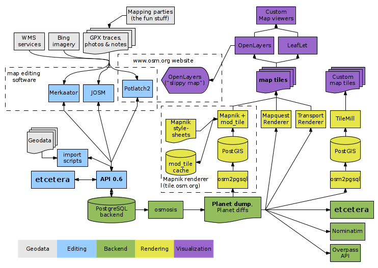
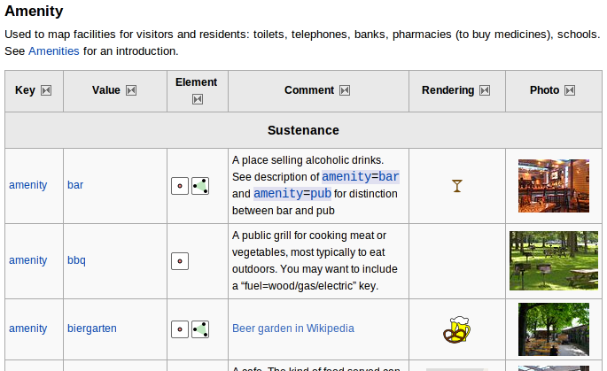
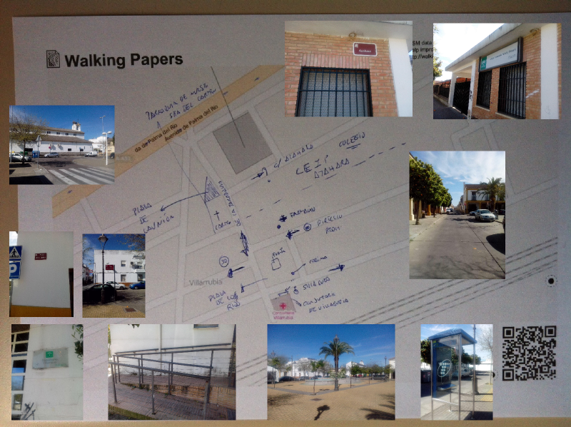
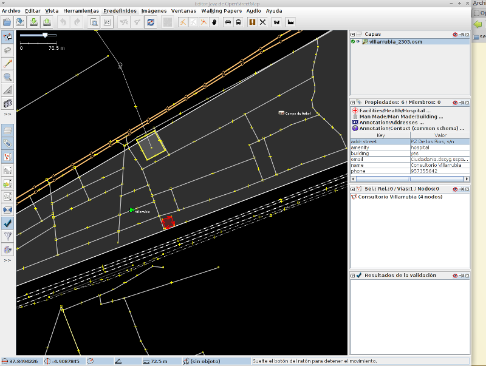

Presentación
Patricio Soriano Castro
Lic. Geografía e Historia
Consultor y Formador TIG y Patrimonio
SIGdeletras.com - @sigdeletras
¿Qué hace un tipo como yo en un lugar como este?
Miembro de Geoinquietos Córdoba
MDV de OSGeo desde 2013
Mapeador en OSM
Esquema del Taller
- Charla sobre OpenStreetMap
- Taller
- P1 Usando OMS
- P2 Mejorando OSM
- P3 Trabajando con OSM
Agradecimientos
- Óscar Zorrilla de @osmburgos y openstreetmap.es
- Jorge Sanz Geoinquietos Valencia / OSGeo
- Ander Pijoan y Cruz Enrique Borges de Deustotech Universidad de Deusto
- Jaume Figueras FIB UPC
- Editores y colaboradores del Wiki de OpenStreetMap
¿A quién le interesan la Información Geográfica?
¿A quién le interesan la Información Geográfica?
Un poco de Historia
Mapa de época paleolítica (13.660 años). Cueva de Abauntz (Navarra)¿A quién le interesan la Información Geográfica?
Un poco de Historia
Interpretación del mapa de época paleolítica (13.660 años)Cueva de Abauntz (Navarra). Diario de Navarra
¿A quién le interesan la Información Geográfica?
Gobiernos, administración, instituciones...
¿A quién le interesan la Información Geográfica?
Empresas y profesionales.

¿A quién le interesan la Información Geográfica?
A personas como ti y a mí.
- Localización
- Rutas
- ...
...y a él también
¿A quién le interesan la Información Geográfica?

Informatización de la IG
- Producciones cartográficas en papel
- CAD, Sistemas de Información Geográfica y geodatabases
- Webmapping: GoogleMaps, IDEs y servicios, mapas embebidos
- Web 2.0: Redes Sociales, geolocalización, geomarketing y SEO Local
Quiero Información Geográfica
¿dónde está?
- Organismos oficiales
- Empresas
- Cartografía colaborativa
Quiero Información Geográfica ¿dónde está?
Organismos oficiales: Cartografía oficial, pública, cada vez más interoperable pero no totalmente abierta, pero avanzando hacia el OpenData ). Ley 37/2007, de 16 de noviembre
Quiero Información Geográfica ¿dónde está?
Privada: Empresas de topografía, cartografía vuelos, GPS, UAV, LIDAR... Servicios Web (ej. GoogleMaps).
Documental "GPS, una guerra global". Documentos TV.Quiero Información Geográfica ¿dónde está?
Información Geográfica voluntaria, participativa, colaborativa o abierta OpenStreetMap, Wikimapia Ver neogeografía.

OpenStreetMap :: Definición
OpenStreetMap (también referido como OSM) es un proyecto colaborativo para crear un mapa libre y actualizable de todo el mundo; por medio de una comunidad de usuarios, es decir personas con un objetivo común, que ceden su tiempo desinteresadamente y sin fines de lucro para tener la posibilidad de ver, copiar, modificar, y usar información geográfica (como esta) de cualquier parte del mundo sin restricciones de ningún tipo. - About OSM
OSM :: Algo de historia
En julio de 2004 el inglés Steve Coast funda OpenStreetMap en respuesta a los altos precios que cobraba la Ordnance Survey, la agencia cartográfica de Gran Bretaña, por su información geográfica.
OSM :: Algo de historia +
- 2004 Steve Coast vs. Ordnance Survey.
- 2006 Fundación sin ánimo de lucro, Yahoo autoriza uso imágenes.
- 2007 Automotive Navigation Data (AND) dona Países Bajos, India y China. TIGER (Censo de EEUU).
- 2008 CloudMade. GeoBase.ca dona Canadá.
- 2009 API 0.6. 200.000 usuarios.
- 2010 SotM en Girona. Bing Maps (Microsoft) permite uso imágenes.
- 2011 + 500.000 usuarios, + 1.000.000.000 nodos
- 2012 Cambio a ODbL, #switch2osm
- 2013 + 1.000.000 usuarios, Tifón Yolanda
- 2014 + 1.500.000 usuarios, ???
OSM :: Algunos datos

OSM :: Algunos datos +
A 25 de marzo de 2014. Fuente
- Usuarios: 1562983
- Putos GPS: 3857367338
- Nodos: 2261817276
- Líenas: 223703780
- Relaciones:2454763
OSM vs GoogleMaps
Condiciones de servicio. Ver
No deberá
- copiar, traducir, modificar o crear obras derivadas
- aplicar ingeniería inversa, descompilar o intentar extraer con cualquier otro método el código fuente
- redistribuir, sublicenciar, alquilar, publicar, vender, asignar, arrendar, comercializar, transferir ni poner los Productos o el Contenido a disposición de terceros de ninguna
- usar los Productos para crear una base de datos de lugares u otra información de entradas locales
- prohibido modificar¿Google MapMaker?
- ...
Open Database License
Licencia de OSM desde septiembre 2012, antes CC-BY-SA

Las comparaciones no son odiosas
Las comparaciones no son odiosas

Las comparaciones no son odiosas
Medina de Pomar, BurgosLas comparaciones no son odiosas

Las comparaciones no son odiosas
Port Aventura. Tarragona¿Quién usa OSM? :: Empresas
Foursquare, iPhoto, Wikipedia, Pinterest...WhiteHouse.gov

¿Quién usa OSM? :: Investigación
- DeustoTech. Universidad de Deusto: uso de OSM a ingeniería, gestión las infraestructuras eléctricas, cat2OSM
- Oberta de Catalunya (UOC): calidad cartográfica
- inLabFIB. Politécnica de Catalunya: optimización de logística terrestre, sostenibilidad urbana, seguimiento
- Más en OSM Research
¿Quién usa OSM? :: Apps
Aplicaciones de consultas, navegación, routing, trackinging, monitorización, edición o accesibilidad. Android - iPhone. Librerías: OpenLayers, LeafLet, OSMDroid o MapsForge.

¿Quién usa OSM? :: HOT
Humanitarian OpenStreetMap Team
- Se organiza a partir del terremoto de Haití
- Se realizan trabajos de formación en zonas necesitadas
- La mayor parte del trabajo es remoto
- Actualmente trabajando en Haití, Indonesia, Somalia, Costa de Marfil...
¿Quién usa OSM? :: HOT
1,679 voluntary contributors of the OpenStreetMap project for Typhoon Haiyan (2013) who made more than 4,799,290 Map changes!
Componentes OSM
BBDD, API, front end, tiles y renderizado, editores

Componentes Humanos
- Mapeadores
- Editores del Wiki de OSM
- Lista de Discusión Talk-es
- State Of The Map
- Comunidades locales como Geonquietos
- Mapping Paties. Sierra de Cazorla 2014
Taller :: ¿Qué podemos hacer con OSM?
- Usar (p1)
- Mejorar (p2)
- Trabajar(p3)
p1: Usar OSM
La práctica consiste en obtener un mapa del Campus de Rabanales de la UCO partiendo de que somos la organización del congreso del RITSI y que queremos:
- Crear un mapa de localización del Aulario.
- Incluir un mapa dinámico en nuestra web y obtener el enlace.
- Crear un mapa guía en PDF del Campus y personalizarlo.
p1: Localización del Aulario del Campus
- Abrir "OpenStreetMap"
- Buscar "Campus de Rabanales, Córdoba" usando Nominatim.
- Ver datos y metadatos asociados.
- Capas base: estándar, ciclista, etc.
- Otros estilo en CloudMade o incluso podemos diseñar el nuestro con Mapbox o Tilemill+CartoCSS
- Ver leyenda.
p1: Obtener mapa dinámico: enlace y código para web.
- Botón Compartir
- Incluir marcador
- Obtener enlace y/o código HTML
- Alternativa: UMAP
p1: Generar un mapa estático
- Botón Compartir
- Establecer dimensiones
- Formatos PNG, JPEG, PDF o SVG (edición)
- Escala
- Descargar
p1: Crear un atlas o mapa guía
- OSM on Paper
- Field Papers
- MapOSMatic
- Editarlo y personalizarlo Ver PDF
P2: Mejorar OSM
Fuentes de datos
- Trazas GPS. Sirven como base para dibujar manualmente las líneas que representarán nuevos elementos cartográficos. Formato GPX en WGS84 Lat/Lon.
- Walking Papers. Se generan e imprimen para tomar detalles de zonas.
- Foto, vídeo y audio
- Fotografía aérea / Servicios WMS. Ej. Bing, PNOA, Canarias, ITACyL, Baleares..
- Trabajos de importación. Ej.Cat2OSM2
P2: Nodos, líneas y relaciones
- Nodos (nodes): Puntos definidos por su latitud y su longitud. en segmentos o solos. (ej. restaurante)
- Vías (ways): Líneas que unen dos o más nodos (ej. carretera). Pueden estar cerradas (ej. edificios, usos del suelo, límites administrativos)
- Relaciones: Agrupan elementos como nodos y/o vías y definen relaciones(ej. áreas con líneas compartidas, "islas", restricciones de giro)
P2: Nodos, líneas y relaciones
P2: Atributos
- Una vez que terminamos de editar añadimos propiedades a los elementos gráficos.
- Las propiedades o etiquetas (tags) son pares de clave- valor como por ejemplo highway=motorway.
- Existen muchas etiquetas y pueden proponerse más.
- Toda la información se encuentra en el wiki Map_Features
P2: Atributos

P2: Edición con ID
- Alta o inicio de sesión.
- Usar el editor web ID.
- Completar datos del Campus de Rabanales
- Incluir Hospital Clínico Veterinario
- Completar calle SCAI
P2: Edición con ID
P2: Edición con JOSM
- Usar el editor de escritorio JOSM. Manual básico en LearnOSM y +Info.
- Añadiremos información de la barriada de Villarrubia
- Añadir el atributos al centro de salud
- Nombres de calles, direcciones, restricciones
- Mejoraremos elementos de la plaza: fuente, cabina, árboles
- Añadiremos la farmacia
- Dibujaremos el colegio
P2: Edición con JOSM

P2: Edición con JOSM

P2: Instalación con JOSM
- Descargar, instalar y configurar preferencias (F12).
- Localizar y descargar la zona de edición. También podríamos usar el walking paper.
- Añadir ortofoto Bing u otras imágenes y servicios de apoyo como Catastro.
- Editar geometrías y añadir atributos
- Validar y corregir errores topológicos
- Guardar/Subir
P2: Edición con JOSM. Ver otros ejemplos
"addr:housenumber": "1",
"addr:street": "Calle Río Tajo",
"amenity": "hospital",
"name": "Hospital Valencia al Mar",
"wheelchair" ="yes",
"emergency"="no",
P2: Edición con JOSM. Map Features
- Plaza (way)
- Tipo highway=pedestrian
- Sentido de la calle
- Velocidad
- Nombre [name=Plaza de los Ríos]
- Fuente de uso ornamental amenity=fountain
- Teléfono público amenity:telephone
- Tipo highway=pedestrian
P2: Edición con JOSM. Map Features
Centro de salud (way). Fuente de datos - SAS
- Edificio [building=yes]
- amenity=clinic
- Dirección Key:addr, Teléfono, Web
- Silla de ruedas wheelchair
P2: Edición con JOSM. Map Features
Farmacia (node)
- amenity:pharmacy
- Medicamentos con receta médica se suele añadir dispensing=yes
P2: Edición con JOSM. Map Features
Colegio (way)
- Edificio building=yes
- amenity=school
- Dirección Key:addr, Teléfono, Web.
- Entradas (nodos sobre línea exterior de edificio).
- entrance=main
- entrance=yes for secondary entries
- entrance=emergency for one-way out of the building in case of emergency
- entrance=service used only by employees or for delivering.
- Pistas deportivas leisure=pitch
p3: Trabajando con los datos
- Los datos de OpenStreetMap se encuentran bajo la licencia Open Database (ODbL) de Open Data Commons.
- Para la modificación, consulta y descargas de datos se utiliza la API (v0.6)de OSM.
- Pero también podemos descargar los datos como ficheros en otros servidores.
- La licencia permite usar el "map" de OSM en nuestros propios desarrollos combinándolos con otras librerías.
p3: Petición de datos a la API
- Disponible en http://www.openstreetmap.org/api/0.6/ Capabilities
- Consulta de datos de la parada de tren de Rabanales
- Historial
- Cambios
- Obtener datos XML (OSM) de una zona (bounding box)
p3: Petición de datos a la API
p3: APIS externas para añadir teselas de OSM
- Openlayers 2. Cliente Web-GIS ligero construido con clases Javascript, sin dependencia de servidores de mapas concretos. Librería madura y amplia, gran soporte de protocolos y formatos, no muy buena para móviles. Ejemplo
- Leaflet. Funciona de manera eficiente en las principales plataformas de escritorio y móviles, aprovechando las ventajas del HTML5 y CSS3 en los navegadores modernos, sin dejar de ser accesibles a los más antiguos. Librería pequeña y rápida, óptima para móviles. Ejemplo
- Mapstore. Desarrollado para crear, guardar, buscar y compartir de una manera sencilla e intuitiva mashups creados con contenido de fuentes del servidor como Google Maps, OpenStreetMap.
p3: Extraer / Exportar datos OSM
- Desde OMS
- Planeta OSM. Copias actualizadas regularmente de la base de datos completa de OpenStreetMap
- Geofabrik. Extractos actualizados regularmente de los continentes, países, y ciudades seleccionadas
- Extractos de Metro. Extractos de las ciudades principales del mundo y sus alrededores
- Overpass Turbo Descargar este cuadro delimitador desde una réplica de la base de datos de OpenStreetMap.
- Otras
p3: Extraer datos desde la web OSM
- Los datos se exportan en formato OSM (parecido a xml). Ver datos OSM
- Los datos OSM se pueden convertir otros formatos GIS o Postgres/PostGIS. Se puede usar osm2pgsql
- Permite trabajar con ellos en un SIG, e incluso directamente en formato OMS con QGis
p3: Extraer datos desde Overpass
- Overpass Turbo Descargar este cuadro delimitador desde una réplica de la base de datos de OpenStreetMap.
p3: Herramientas
http://osmtools.de/osmlinks/